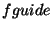
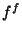
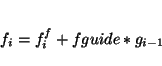
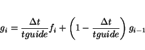
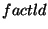
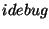

Inter-processor communication using the global array tools and the design of a data structure allowing distribution based on spacial decomposition are the key elements in taking advantage of the distribution of memory requirements and computational work with minimal communication.
In the spacial decomposition approach, the physical simulation volume is divided into rectangular cells, each of which is assigned to a processor. Depending on the conditions of the calculation and the number of available processors, each processor contains one or more of these spacially grouped cells. The most important aspects of this decomposition are the dependence of the cell sizes and communication cost on the number of processors and the shape of the cells, the frequent reassignment of atoms to cells leading to a fluctuating number of atoms per cell, and the locality of communication which is the main reason for the efficiency of this approach for very large molecular systems.
To improve efficiency, molecular systems are broken up into separately treated solvent and solute parts. Solvent molecules are assigned to the domains according to their center of geometry and are always owned by a one node. This avoids solvent-solvent bonded interactions crossing node boundaries. Solute molecules are broken up into segments, with each segment assigned to a processor based on its center of geometry. This limits the number of solute bonded interactions that cross node boundaries. The processor to which a particular cell is assigned is responsible for the calculation of all interactions between atoms within that cell. For the calculation of forces and energies in which atoms in cells assigned to different processors are involved, data are exchanged between processors. The number of neighboring cells is determined by the size and shape of the cells and the range of interaction. The data exchange that takes place every simulation time step represents the main communication requirements. Consequently, one of the main efforts is to design algorithms and data structures to minimize the cost of this communication. However, for very large molecular systems, memory requirements also need to be taken into account.
To compromise between these requirements exchange of data is performed in successive point to point communications rather than using the shift algorithm which reduces the number of communication calls for the same amount of communicated data.
For inhomogeneous systems, the computational load of evaluating atomic interactions will generally differ between cell pairs. This will lead to load imbalance between processors. Two algorithms have been implemented that allow for dynamically balancing the workload of each processor. One method is the dynamic resizing of cells such that cells gradually become smaller on the busiest node, thereby reducing the computational load of that node. Disadvantages of this method are that the efficiency depends on the solute distribution in the simulation volume and the redistribution of work depends on the number of nodes which could lead to results that depend on the number of nodes used. The second method is based on the dynamic redistribution of intra-node cell-cell interactions. This method represents a more coarse load balancing scheme, but does not have the disadvantages of the cell resizing algorithm. For most molecular systems the cell pair redistribution is the more efficient and preferred method.
The description of a molecular system consists of static and dynamic information. The static information does not change during a simulation and includes items such as connectivity, excluded and third neighbor lists, equilibrium values and force constants for all bonded and non-bonded interactions. The static information is called the topology of the molecular system, and is kept on a separate topology file. The dynamic information includes coordinates and velocities for all atoms in the molecular system, and is kept in a so-called restart file.
In molecular systems, a distinction is made between solvent and solute, which are treated separately. A solvent molecule is defined only once in the topology file, even though many solvent molecules usually are included in the actual molecular system. In the current implementation only one solvent can be defined. Everything that is not solvent in the molecular system is solute. Each solute atom in the system must be explicitly defined in the topology.
Molecules are defined in terms of one or more segments. Typically, repetitive parts of a molecule are each defined as a single segment, such as the amino acid residues in a protein. Segments can be quite complicated to define and are, therefore, collected in a set of database files. The definition of a molecular system in terms of segments is a sequence.
Topology files are created using the prepare module.
File names used have the form $system$_$calc$.$ext$, with
exception of the topology file (Section 31.1.2), which is named
$system$.top.
Anything that refers to the definition of the chemical system can be used
for $system$, as long as no periods or underlines are used.
The identifier $calc$ can be anything that refers to the type of
calculation to be performed for the system with the topology defined.
This file naming convention allows for the creation of a single
topology file $system$.top that can be used for a number of
different calculations, each identified with a different $calc$.
For example, if crown.top is the name of the topology file for
a crown ether, crown_em, crown_md, crown_ti could
be used with appropriate extensions for the filenames for energy
minimization, molecular dynamics simulation and multi-configuration
thermodynamic integration, respectively. All of these calculations
would use the same topology file crown.top.
The extensions <ext> identify the kind of information on a file,
and are pre-determined.
|
$ffield$_$level$,
$ffield$ is any of the
supported force fields (Section 31.1.5).
The source of the data is identified by $level$, and can be
| level | Description | Availability |
| s | original published data | public |
| x | additional published data | public |
| q | contributed data | public |
| u | user preferred data | private |
| t | user defined temporary data | private |
| c | current working data | private |
Typically, only the level s, x and q databases are publicly
available.
The user is responsible for the private level u, t and c
database files. When the prepare module scans the databases, the priority
is c t
t u
u q
q x
x s.
s.
The extension <ext> defines the type of database file within each
database directory.
|
The paths of the different database directories should be defined in a file .nwchemrc in a user's home directory, and provides the user the option to select which database files are scanned.
| Keyword | Force field | Status |
| amber | AMBER99 | AMBER95,GLYCAM also available |
| charmm | CHARMM | incomplete |
Which atoms form a fragment is specified in the coordinate file, currently only in PDB format. the restriction is that bonded interactions may only involve atoms on at most two segments does no longer exist as of NWChem release 3.2.1. The segment entries define three sets of parameters for each interaction.
Free energy perturbations can be performed using set 1 for the
generation of the ensemble while using sets 2 and/or 3
as perturbations. Free energy multiconfiguration thermodynamic
integration and multistep thermodynamic perturbation calculations are
performed by gradually changing the interactions in the system from
parameter set 2 to parameter set 3. These modifications can be
edited into the segment files manually, or introduced directly into
the topology file using the modify commands in the input for
the prepare module.
The format of a segment is described in Tables 34.2-34.7.
The topology (Section 31.1.2) describes all static information that describes a molecular system. This includes the connectivity in terms of bond-stretching, angle-bending and torsional interactions, as well as the non-bonded van der Waals and Coulombic interactions.
The topology of a molecular system is generated by the prepare module from the sequence in terms of segments as specified on the PDB file. For each unique segment specified in this file the segment database directories are searched for the segment definition. For segments not found in one of the database directories a segment definition is generated in the temporary directory if a fragment file was found. If a fragment file could not be found, it is generated by the prepare module base on what is found on the PDB file.
When all segments are found or created, the parameter substitutions are
performed, using force field parameters taken from the parameter
databases. After all lists have been generated the
topology is written to a local topology file $system$.top.
Restart files contain all dynamical information about a molecular system and are created by the prepare module if a topology file is available. The prepare module will automatically generate coordinates for hydrogen atoms and monatomic counter ions not found on the PDB formatted coordinate file, if no fragment or segment files were generated using that PDB file.
The prepare module has a number of other optional input command, including solvation.
task md [ energy | optimize | dynamics | thermodynamics ]where the theory keyword md specifies use of the molecular dynamics module, and the operation keyword is one of
The chemical system for a calculation is specified in the topology
and restart files. These files should be created using the utilities
nwtop and nwrst before a simulation can be performed.
The names of these files are determined from the required system
directive.
system <string systemid>_<string calcid>
where the strings systemid and calcid are user defined names
for the chemical system and the type of calculation to ber performed,
respectively. These names are used to derive the filenames used for the
calculation. The topoly file used will be systemid.top, while all
other files are named systemid_calcid.ext.
finishspecifies that the current job will finish a previous, incomplete simulation, using the input data that have been recorded by that previous run in the restart file. Most of the input in the current md input block will be ignored.
resumespecifies that the current job will be an extension of a previous simulation, using most of the input data that have been recorded by that previous run in the restart file. Typically the input in the current md input block defines a larger number of steps than the previous job.
set <integer iset>specifies the use of parameter set
<iset> for the
molecular dynamics simulation.
The topology file contains three separate parameters sets that can
be used. The default for <iset> is 1.
lambda <integer ilambda> <integer ilambda>specifies the use of parameter set for the
ilambda-th
of mlambda steps.
pset <integer isetp1> [<integer isetp2>]specifies the parameter sets to be used as perturbation potentials in single step thermodynamic perturbation free energy evaluations, where
<isetp1> specifies the first perturbation parameter set and
<isetp2> specifies the second perturbation parameter set. Legal
values for <isetp1> are 2 and 3. Legal value for <isetp2> is
3, in which case <isetp1> can only be 2. If specified, <iset>
is automatically set to 1.
pmf [ equilharm <integer npmfc> | scale <real facpmf>]specifies that any potential of mean force functions defined in the topology files are to be used. If
equilharm is specified, the
first npmfc dynamics steps will use a harmonic potential
in stead of any pmf constraint. If scale is specified, all
pmf force constants are scaled by a factor facpmf.
distar [draver [<integer ndaver default 1>]]
[scale <real drsscl>]
[after <integer nfdrss>]
specifies that any distance restraint functions defined in the
topology files are to be used.
sd <integer msdit> [init <real dx0sd>] [min <real dxsdmx>] \
[max <real dxmsd>]
specifies the variables for steepest descent energy minimizations,
where <msdit> is the maximum number of steepest descent steps taken,
for which the default is 100, <dx0sd> is the initial step size in nm
for which the default is 0.001, <dxsdmx> is the threshold for the
step size in nm for which the default is 0.0001, and <dxmsd> is the
maximum allowed step size in nm for which the default is 0.05.
cg <integer mcgit> [init <real dx0cg>] [min <real dxcgmx>] \
[cy <integer ncgcy>]
specifies the variables for conjugate gradient energy minimizations,
where <mcgit> is the maximum number of conjugate gradient steps
taken, for which the default is 100, <dx0cg> is the initial search
interval size in nm for which the default is 0.001, <dxcgmx> is the
threshold for the step size in nm for which the default is 0.0001, and
<ncgcy> is the number of conjugate gradient steps after which the
gradient history is discarded for which the default is 10. If conjugate
gradient energy minimization is preceded by steepest descent energy
minimization, the search interval is set to twice the final step of the
steepest descent energy minimization.
(forward | reverse) [[<integer mrun> of] <integer maxlam>]specifies the direction and number of integration steps in free energy evaluations, with forward being the default direction.
<mrun> is the number of ensembles that will be generated in
this calculation, and <maxlam> is the total number of ensembles
to complete the thermodynamic integration. The default value for
<maxlam> is 21. The default value of <mrun> is the
value of <maxlam>.
error <real edacq>specifies the maximum allowed statistical error in each generated ensemble, where
<edacq> is the maximum error allowed in the
ensemble average derivative of the Hamiltonian with respect to
with a default of 5.0 kJ mol
drift <real ddacq>specifies the maximum allowed drift in the free energy result, where
<ddacq> is the maximum drift allowed in the
ensemble average derivative of the Hamiltonian with respect to
with a default of 5.0 kJ mol
factor <real fdacq>specifies the maximum allowed change in ensemble size where
<fdacq> is the minimum size of an ensemble relative to the
previous ensemble in the calculation with a default value of 0.75.
decompspecifies that a free energy decomposition is to be carried out. Since free energy contributions are path dependent, results from a decomposition analysis can no be unambiguously interpreted, and the default is not to perform this decomposition.
sss [delta <real delta>]specifies that atomic non-bonded interactions describe a dummy atom in either the initial or final state of the thermodynamic calculation will be calculated using separation-shifted scaling, where
<delta>
is the separation-shifted scaling factor with a default of 0.075 nm
new | renew | extendspecifies the initial conditions for thermodynamic calculations. new indicates that this is an initial mcti calculation, which is the default. renew instructs to obtain the initial conditions for each from the mro-file from a previous mcti calculation, which has to be renamed to an mri-file. The keyword extend will extend a previous mcti calculation from the data read from an mri-file.
leapfrog | leapfrog_bcspecifies the integration algorithm, where leapfrog specifies the default leap frog integration, and leapfrog_bc specifies the Brown-Clarke leap frog integrator.
guided [<real fguide default 0.2> [<real tguide default 0.2>]]specifies the use of the guided molecular dynamics simulation technique. Variable  defines the fraction of the averaged forces to be added to the forces  evaluated using the force field functions to obtain the forces
|  | (31.1) |
|  | (31.2) |
equil <integer mequi>specifies the number of equilibration steps
<mequi>, with a default
of 100.
data <integer mdacq> [over <integer ldacq>]]specifies the number of data gathering steps
<mdacq> with a
default of 500. In multi-configuration thermodynamic integrations
<mequi> and <mdacq> are for each of the ensembles, and
variable <ldacq> specifies the minimum number of data gathering steps
in each ensemble. In regular molecular dynamics simulations <ldacq>
is not used. The default value for <ldacq> is the value of <mdacq>.
time <real stime>specifies the initial time
<stime> of a molecular simulation in ps,
with a default of 0.0.
step <real tstep>specifies the time step
<tstep> in ps, with 0.001 as the default value.
isotherm [<real tmpext> [<real tmpext2>]] [trelax <real tmprlx> [<real tmsrlx>]] \
[anneal [<real tann1>] <real tann2>]
specifies a constant temperature ensemble using Berendsen's thermostat,
where <tmpext> is the external temperature with a default of 298.15 K,
and <tmprlx> and <tmsrlx> are temperature relaxation times in ps
with a default of 0.1. If only <tmprlx> is given the complete system
is coupled to the heat bath with relaxation time <tmprlx>. If both
relaxation times are supplied, solvent and solute are independently coupled
to the heat bath with relaxation times <tmprlx> and <tmsrlx>,
respectively. If keyword anneal is specified, the external temperature
will change from tmpext to tempext2 between simulation time
tann1 and tann2
isobar [<real prsext>] [trelax <real prsrlx> ] \
[compress <real compr>] [anisotropic] [xy | z | xy-z]
specifies a constant pressure ensemble using Berendsen's piston,
where <prsext> is the external pressure with a default of 1.025 10 Pa,
<prsrlx> is the pressure relaxation time in ps with a default of 0.5, and
<compr> is the system compressibility in mxy, z and xy-z
may be used to specify that pressure scaling is to be applied in
the x and y dimension only, the z dimension only, or,
in all three dimensions with identical scaling in the x and y
dimension. The last option requires that anisotropic is also specified.
vreass <integer nfgaus> <real tgauss>
[fraction [<real frgaus default 0.5]]
[once]
[(first | initial)] [(last | final)]
specifies that velocities will be reassigned every <nfgaus> molecular
dynamics steps, reflecting a temperature of <tgauss> K. The default
is not to reassign velocities, i.e. <nfgaus> is 0. Keyword
fraction allows the specification of the fraction of the new
velocities are random. Keyword once specifies that velocity
reassignment only should be done in the first step. Keywords first
or initial and last or final specify that
velocity reassigment should only be applied in the first and last
window of multiple run simulations.
cutoff [short] <real rshort> [long <real rlong>] \
[qmmm <real rqmmm>]
specifies the short range cutoff radius <rshort>, and the long range
cutoff radius <rlong> in nm. If the long range cutoff radius
is larger than the short range cutoff radius the twin range method will
be used, in which short range forces and energies are evaluated every
molecular dynamics step, and long range forces and energies with a
frequency of <nflong> molecular dynamics steps. Keyword
qmmm specifies the radius of the zone around quantum atoms
defining the QM/MM bare charges.
The default value for <rshort>, <rlong> and <rqmmm>
is 0.9 nm.
polar (first | scf [[<integer mpolit>] <real ptol>])specifies the use of polarization potentials, where the keyword first specifies the first order polarization model, and scf specifies the self consistent polarization field model, iteratively determined with a maximum of
<mpolit>
iterations to within a tolerance of <ptol> D in the generated
induced dipoles. The default is not to use polarization models.
field <real xfield> [freq <real xffreq>] [vector <real xfvect(1:3)>]specifies an external electrostatic field, where
<xfield> is the field strength, <xffreq> is the
frequency in MHz and <xfvect> is the external field vector.
shake [<integer mshitw> [<integer mshits>]] \
[<real tlwsha> [<real tlssha>]]
specifies the use of SHAKE constraints,
where <mshitw> is the maximum number of solvent SHAKE iterations,
and <mshits> is the maximum number of solute SHAKE iterations. If
only <mshitw> is specified, the value will also be used for <mshits>.
The default maximum number of iterations is 100 for both.
<tlwsha> is the solvent SHAKE tolerance in nm, and <tlssha> is
the solute SHAKE tolerance in nm. If only <tlwsha> is specified, the
value given will also be used for <tlssha>. The default tolerance
is 0.001 nm for both.
noshake (solvent | solute)disables SHAKE and treats the bonded interaction according to the force field.
pme [grid <integer ng>] [alpha <real ealpha>] \
[order <integer morder>] [fft <integer imfft>]\
[procs <integer nprocs>] [solvent]
specifies the use of smooth particle-mesh Ewald long range
interaction treatment,
where ng is the number of grid points per dimension,
ealpha is the Ewald coefficient in nmmorder is order of the Cardinal B-spline
interpolation which must be an even number and at least 4 (default
value). A platform specific 3D fast Fourier transform is used, if
available, when imfft is set to 2. nprocs can be used to
define a subset of processors to be used to do the FFT calculations.
If solvent is specified, the charge grid will be calculated from
the solvent charges only.
react [<real dielec default 80.0>]specifies that a simple reaction field correction is used with a dielectric constant
dielec. This is an
experimental option that has not been well tested.
( fix | free )
solvent ( [<integer idfirst> [<integer idlast>]] |
( within | beyond) <real rfix> <string atomname> ) | \
solute ( [<integer idfirst> [<integer idlast>]] [ heavy | {<string atomname>}] |
( within | beyond) <real rfix> <string atomname> )
[permanent]
For solvent the molecule numbers idfirst and idlastmay be
specified to be the first and last molecule to which the directive
applies. If omitted, the directive applies to all molecules. For solute,
the segment numbers idfirst and idlastmay be
specified to be the first and last segment to which the directive
applies. If omitted, the directive applies to all segments. In addition,
the keyword heavy may be specified to apply to all non hydrogen
atoms in the solute, or a set of atom names may be specified in which
a wildcard character ? may be used. Keyword permanent
is used to keep the specification on the restart file for subsequent
simulations.
import [<integer impfr default 1> [<integer impto default impfr> \
[<integer nftri default 1>]]]
specifies the import of frames impfr to impto with
frequency nftri from a trajectory file with extension
tri for which energies and forces are to be recalculated.
This option only applied to task md energy.
detailspecifies that moments of inertia and radii of gyration will be part of the recorded properties.
profilespecifies that execution time profiling data will be part of the recorded properties.
scale <real scaleq>specifies that all charges will be scaled by the factro
scaleq.
collapse [<real fcoll default 10.0> [ z | xy ]specifies that additional forces directed to the origin of the simulation cell with strength
fcoll will be
applied to all solute molecules. If z or xy is
specified, these forces will only apply in the specified dimension(s).
include fixedspecifies that energies will be evaluated between fixed atoms. Normally these interactions are excluded from the pairlists.
eqm <real eqm>specifies the zero point of energy in QMD simulations.
atomlistspecifies that pairlists will be atom based. Normally pairlist are charge group based.
auto <integer lacf> [fit <integer nfit>] [weight <real weight>]controls the calculation of the autocorrelation, where
<lacf> is the length of the autocorrelation function, with
a default of 1000, <nfit> is the number of functions used in the
fit of the autocorrelation function, with a default of 15, and
<weight> is the weight factor for the autocorrelation function,
with a default value of 0.0.
print [topol [nonbond] [solvent] [solute]] \
[step <integer nfoutp> [extra] [energy]] \
[stat <integer nfstat>] \
[energies [<integer nfener>]] \
[forces [<integer nfforce>]] \
[matrix] \
[expect <integer npxpct>] \
[timing] \
[pmf [<integer iprpmf>]] \
[out6] \
[dayout]
Keyword topol specifies printing the topology information,
where nonbond refers to the non-bonded interaction parameters,
solvent to the solvent bonded parameters, and solute to the
solute bonded parameters. If only topol is specified, all
topology information will be printed to the output file.
Keyword step
specifies the frequency nfoutp of printing molecular dynamics step
information to the output file. If the keyword extra is specified
additional energetic data are printed for solvent and solute separately.
If the keyword energy is specified, information is printed for
all bonded solute interactions.
The default for nfoutp is 0. For molecular dynamics simulations
this frequency is in time steps, and for multi-configuration thermodynamic
integration in -steps.
Keyword stat
specifies the frequency <nfstat> of printing statistical information
of properties that are calculated during the simulation.
For molecular dynamics simulation
this frequency is in time steps, for multi-configuration thermodynamic
integration in -steps.
Keyword energies
specifies the frequency nfener of printing solute bonded energies
the output file for energy/import calculations.
The default for nfener is 0.
Keyword forces
specifies the frequency nfforc of printing solute forces
the output file for energy/import calculations.
The default for nfforc is 0.
Keyword matrix specifies that a solute distance matrix is to
be printed.
Keyword expect is obsolete.
Keyword timing specifies that timing data is printed.
Keyword pmf specifies that pmf data is printed every iprpmf
steps.
Keyword out6 specifies that output is written to standard out in stead
of the output file with extension out.
Keyword dayout is obsolete.
update [pairs <integer nfpair default 1>] \
[long <integer nflong default 1>] \
[center <integer nfcntr default 0> [zonly | xyonly] \
[fraction <integer idscb(1:5)>] \
[motion <integer nfslow default 0>] \
[analysis <integer nfanal default 0>] \
[rdf <integer nfrdf default 0> \
[range <real rrdf>] [bins <integer ngl>] \
Keyword pairs
specifies the frequency <nfpair> in molecular dynamics steps of
updating the pair lists. The default for the frequency is 1.
In addition, pair lists are also updated after each step in which
recording of the restart or trajectory files is performed. Updating
the pair lists includes the redistribution of atoms that changed
domain and load balancing, if specified.
Keyword long
specifies the frequency <nflong> in molecular dynamics steps
of updating the long range forces. The default frequency is 1.
The distinction of short range and long range forces is only
made if the long range cutoff radius was specified to be larger
than the short range cutoff radius. Updating the long range forces
is also done in every molecular dynamics step in which the
pair lists are regenerated.
Keywrod center
specifies the frequency <nfcntr> in molecular dynamics steps in
which the center of geometry of the solute(s) is translated to the
center of the simulation volume. Optional keyword zonly or
xyonly can be used to specify that centering will take place in
the z-direction or in the xy-plane only.
The solute fractions determining the
solutes that will be centered are specified by the keyword
fraction and the vector <idscb>, with a maximum of 5 entries.
This translation is implemented such that it has no effect on any
aspect of the simulation. The default is not to center, i.e. nfcntr is
0. The default fraction used to center solute is 1.
Keyword motion
specifies the frequency <nfslow> in molecular dynamics steps of
removing the center of mass motion.
Keyword analysis
specifies the frequency <nfanal> in molecular dynamics steps of
invoking the analysis module. This option is obsolete.
Keyword rdf
specifies the frequency <nfrdf> in molecular dynamics steps of
calculating contributions to the radial distribution functions.
The default is 0. The range of the radial distribution
functions is given by <rrdf> in nm, with a default of the short
range cutoff radius. Note that radial distribution functions are not
evaluated beyond the short range cutoff radius. The number of
bins in each radial distribution function is given by <ngl>, with
a default of 1000. This option is no longer supported.
If radial distribution function are to be
calculated, a rdi files needs to be available in which the
contributions are specified as follows.
| Card | Format | Description |
| I-1 | i | Type, 1=solvent-solvent, 2=solvent-solute, 3-solute-solute |
| I-2 | i | Number of the rdf for this contribution |
| I-3 | i | First atom number |
| I-4 | i | Second atom number |
record [rest <integer nfrest> [keep]] \
[coord <integer nfcoor default 0>] \
[wcoor <integer nfwcoo default 0>] \
[scoor <integer nfscoo default 0>] \
[veloc <integer nfvelo default 0>] \
[wvelo <integer nfwvel default 0>] \
[svelo <integer nfsvel default 0>] \
[force <integer nfvelo default 0>] \
[wforc <integer nfwvel default 0>] \
[sforc <integer nfsvel default 0>] \
[(prop | prop_average) <integer nfprop default 0>] \
[free <integer nffree default 1>] \
[sync <integer nfsync default 0>] \
[times <integer nftime default 0>] \
[acf] [cnv] [fet]
[binary] [ascii] [ecce] [argos]
Keyword rest
specifies the frequency <nfrest> in molecular dynamics steps
of rewriting the restart file, with extension rst.
For multi-configuration
thermodynamic integration simulations the frequency is in
steps in . The default is not to record. The restart
file is used to start or restart simulations. The keyword keep
causes all restart files written to be kept on disk, rather than
to be overwritten.
Keyword coord
specifies the frequency <nfcoor> in molecular dynamics steps
of writing coordinates to the trajectory file. This directive redefines
previous coord, wcoor and scoor
directives. The default is not to record.
Keyword wcoor
specifies the frequency <nfcoor> in molecular dynamics steps
of writing solvent coordinates to the trajectory file. This keyword
takes precedent over coord. This directive redefines
previous coord, wcoor and scoor
directives.
The default is not to record.
Keyword scoor
specifies the frequency <nfscoo> in molecular dynamics steps
of writing solute coordinates to the trajectory file. This keyword
takes precedent over coord. This directive redefines
previous coord, wcoor and scoor
directives.
The default is not to record.
Keyword veloc
specifies the frequency <nfvelo> in molecular dynamics steps
of writing velocities to the trajectory file. This directive redefines
previous veloc, wvelo and svelo
directives.
The default is not to record.
Keyword wvelo
specifies the frequency <nfvelo> in molecular dynamics steps
of writing solvent velocitiesto the trajectory file. This keyword
takes precedent over veloc. This directive redefines
previous veloc, wvelo and svelo
directives.
The default is not to record.
Keyword svelo
specifies the frequency <nfsvel> in molecular dynamics steps
of writing solute velocities to the trajectory file. This keyword
takes precedent over veloc. This directive redefines
previous veloc, wvelo and svelo
directives.
The default is not to record.
Keyword force
specifies the frequency <nfvelo> in molecular dynamics steps
of writing forces to the trajectory file. This directive redefines
previous vforce, wforc and sforc
directives.
The default is not to record.
Keyword wforc
specifies the frequency <nfvelo> in molecular dynamics steps
of writing solvent forcesto the trajectory file. This keyword
takes precedent over force. This directive redefines
previous vforce, wforc and sforc
directives.
The default is not to record.
Keyword sforc
specifies the frequency <nfsvel> in molecular dynamics steps
of writing solute forces to the trajectory file. This keyword
takes precedent over force. This directive redefines
previous vforce, wforc and sforc
directives.
The default is not to record.
Keyword prop
specifies the frequency <nfprop> in molecular dynamics steps
of writing information to the property file, with extension
prp. The default is not to record.
Keyword prop_average
specifies the frequency <nfprop> in molecular dynamics steps
of writing average information to the property file, with extension
prp.
The default is not to record.
Keyword free
specifies the frequency <nffree> in multi-configuration
thermodynamic integration steps to record data to the
free energy data file, with extension gib.
The default is 1, i.e. to record at every .
This option is obsolete. All data are required to do the
final analysis.
Keyword sync
specifies the frequency <nfsync> in molecular dynamics steps
of writing information to the synchronization file, with extension
syn.
The default is not to record.
The information written is the simulation time, the wall clock time
of the previous MD step, the wall clock time of the previous force
evaluation, the total synchronization time, the largest
synchronization time and the node on which the largest synchronization
time was found. The recording of synchronization times is part of the
load balancing algorithm. Since load balancing is only performed when
pair-lists are updated, the frequency <nfsync> is correlated
with the frequency of pair-list updates <nfpair>. This directive
is only needed for analysis of the load balancing performance. For
normal use this directive is not used.
Keyword times
specifies the frequency <nfsync> in molecular dynamics steps
of writing information to the timings file, with extension
tim.
The default is not to record.
The information written is wall clock time used by each of the
processors for the different components in the force evaluation.
This directive is only needed for analysis of the wall clock time
distribution. For normal use this directive is not used.
Keywords acf, cnv and fet are obsolete.
Keywords binary, ascii, ecce and argos are obsolete.
load [reset]
( none |
size [<real factld>] |
sizez [<real factld>] | pairs |
(pairs [<integer ldpair>] size [<real factld>]) )
[last]
[minimum]
[average]
[combination]
[iotime]
[experimental]
determines the type of dynamic load balancing performed,
where the default is none. Load balancing option size
is resizing cells on a node, and pairs redistributes the
cell-cell interactions over nodes. Keyword reset will reset the
load balancing read from the restart file. The level of cell resizing
can be influenced with . The cells on the busiest node are
resized with a factor
 |
(31.3) |
ldpair is the number of successive pair
redistribution load balancing steps in which the accumulated synchronization
time increases, before a resizing load balancing step will be attempted.
Load balancing is only performed in molecular dynamics steps in which the
pair-list is updated. The default load balancing is equivalent to specifying
load pairs 10 size 0.75Keyword
last specifies that the load balancing is based on the
synchronization times of the last step. This is the default.
Keyword average specifies that the load balancing is based on the
average synchronization times since the last load balancing step.
Keyword minimum specifies that the load balancing is based on the
minimum synchronization times since the last load balancing step.
Keywords combination, iotime and experimental are
experimental load balancing options that should not be used in
production runs.
(pack | nopack)specifies if data are communicated in packed or unpacked form. The default is
pack.
procs <integer npx> <integer npy> <integer npz>specifies the distribution of the available processors over the three Cartesian dimensions. The default distribution is chosen such that,
<npx><npy><npz>=<np>
and <npx> <npy> <npz>,
where <npx>, <npy> and <npz> are the processors in the
x, y and z dimension respectively, and <np> is the number of processors
allocated for the calculation. Where more than one combination
of <npx>, <npy> and <npz> are possible, the
combination is chosen with the minimum value of
<npx><npy><npz>. To change the default setting
the following optional input option is provided.
cells <integer nbx> <integer nby> <integer nbz>specifies the distribution of cells, where
<nbx>, <nby> and <nbz> are the number of
cells in x, y and z direction, respectively.
The molecular system is decomposed into cells that form the smallest
unit for communication of atomic data between nodes. The size of the
cells is per default set to the short-range cutoff radius. If
long-range cutoff radii are used the cell size is set to half the
long-range cutoff radius if it is larger than the short-range cutoff.
If the number of cells in a dimension is less than the number of
processors in that dimension, the number of cells is set to the number
of processors.
extra <integer madbox>sets the number of additional cells for which memory is allocated. In rare events the amount of memory set aside per node is insufficient to hold all atomic coordinates assigned to that node. This leads to execution which aborts with the message that mwm or msa is too small. Jobs may be restarted with additional space allocated by where
<madbox> is the number of additional cells that are allocated
on each node. The default for <madbox> is 6.
In some cases <madbox> can be reduced to 4 if memory usage is a
concern. Values of 2 or less will almost certainly result in memory
shortage.
mwm <integer mwmreq>sets the maximum number of solvent molecules
<mwmreq> per node,
allowing increased memory to be allocated for solvent molecules. This
option can be used if execution aborted because mwm was too
small.
msa <integer msareq>sets the maximum number of solute atoms
<msareq> per node,
allowing increased memory to be allocated for solute atoms. This
option can be used if execution aborted because msa was too
small.
mcells <integer mbbreq>sets the maximum number of cell pairs
<mbbreq> per node,
allowing increased memory to be allocated for the cell pair lists.
This option can be used if execution aborted because mbbl was too
small.
boxmin <real rbox>sets the minimum size of a cell. This directive is obsolete. The use of mcells is preferred.
segmentsize <real rsgm>sets the maximum size of a segment. This value is used to determine which segments at the boundary of the cutoff radius should be considered in the generation of the pairlists. This value is also determined by the prepare module and written to the restart file. Use of this directive is not needed for simulations that use the current prepare module to generate the restart file.
memory <integer memlim>sets a limit
<memlim> in kB on the allocated amount of memory used by
the molecular dynamics module.
Per default all available memory is allocated. Use of this command
is required for QM/MM simulations only.
expertenables the use of certain combinations of features that are considered unsafe. This directive should not be used for production runs.
develop <integer idevel>enables the use of certain development options specified by the integer
idevel. This option is for development purposes only,
and should not be used for production runs.
control <integer icntrl>enables the use of certain development options specified by the integer
icntrl. This option is for development purposes only,
and should not be used for production runs.
numericalwrites out analytical and finite difference forces for test purposes.
server <string servername> <integer serverport>allows monitoring over a socket connection to the specified port on the named server of basic data as a simulation is running.
debug <integer idebug>where  specifies the type of debug information being written.
test <integer itest>where